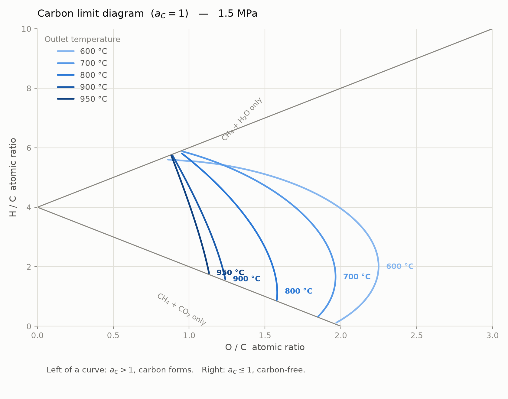
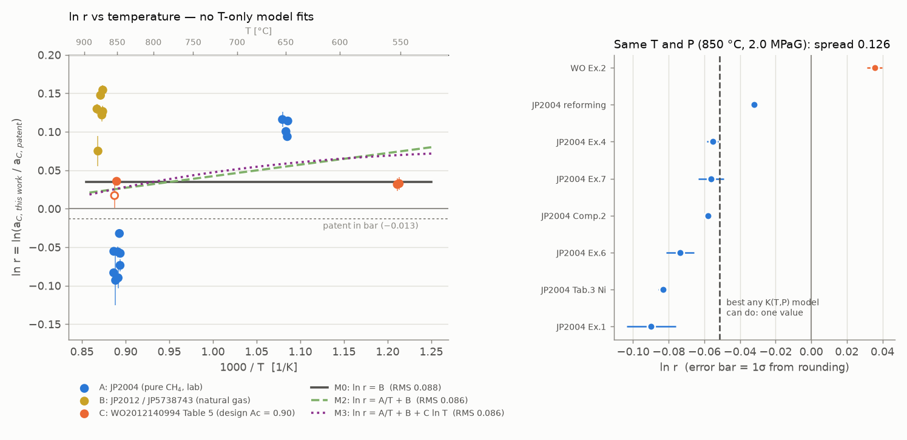
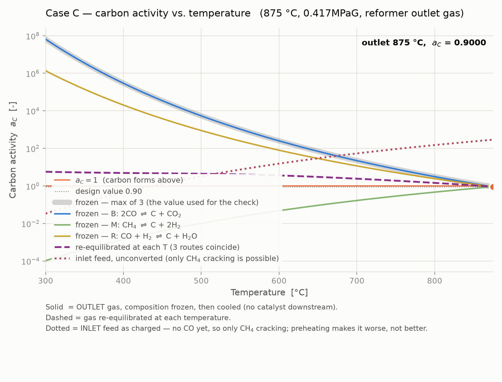
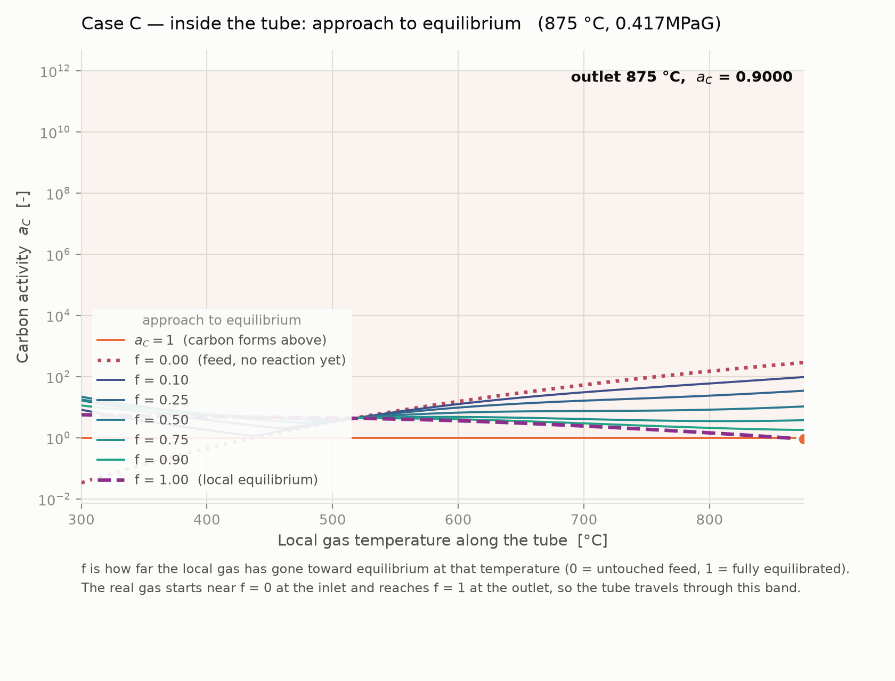

Carbon activity · CH₄ + CO₂ + H₂O reforming
CH₄ を CO₂ と H₂O で改質して合成ガスを作るとき、水蒸気を絞るほど省エネかつ CO₂ を有効利用できるが、触媒上に炭素が析出する。その境界を熱力学で切る量が炭素活量 aC で、aC > 1 なら気相が固体炭素に対して過飽和＝析出が有利になる。ここでは定義・計算法・chemflow2 での実装・原論文との照合をまとめる。
一次出典: Rostrup-Nielsen, J. Catal. 27 343–356 (1972) · DOI 10.1016/0021-9517(72)90170-4 ·
線図としての利用: Udengaard ら, Oil & Gas J. 90(10) 62–67 (1992) ·
本プロジェクトでの利用元: Mikuriya, Yagi, Shimura, AIChE Annual Meeting 2008 · Mikuriya_Yagi_Shimura_2008_AIChE_CO2_H2O_reforming.pdf
✅ 定義式は千代田自身の特許で確認できた — WO2012140994A1【0067】〜【0068】
AIChE 2008 は等高線 “Carbon Activity = 1” を示すだけで式を書いていないが、同社の特許 WO2012140994A1（発明者 坂口順一, 優先日 2011-04-12, 「CO₂ を排出しない合成ガスの製造方法」, PCT/JP2012/057127）の実施例セクション、公報 19 頁（PDF 21 頁目）に定義式が明記されている。 原文（PDF から直読）:
【0067】…また、カーボン活性とは、下記式４で表されるものであり、このカーボン活性の値が１を超えると触媒上にカーボンが析出しやすくなる。
【0068】［式４］ カーボン活性＝Ｋ×（Ｐco）²／（Ｐco₂）
ここで、Ｋは２ＣＯ＝Ｃ＋ＣＯ₂の反応の平衡定数であり、Ｐxは成分xの分圧である。
K の中身まで明示されており、これは下記 B（Boudouard 経路）そのもの。千代田は Boudouard 1 本で 定義しているが、§2 のとおり平衡気相では 3 経路が一致するので、改質器出口に適用する限り 本実装（3 経路の最大値）と同値。分圧の単位は明記されていないが、Boudouard の K が無次元である以上 atm 基準と解釈するほかなく、本実装と整合する。
⚠️ 保存 PDF は全 32 頁ともスキャン画像でテキスト層が無いため、位置の特定はページを画像化して目視で行った。 なお Google Patents はこの箇所を【0091】/ 全 92 段落と表示するが誤り。この WO 公報の明細書は 【0075】（符号の説明）で終わっている。ファミリー他文献のテキストが混在しているものと思われる。
aC は「その気相と平衡にある固体炭素（黒鉛）の活量」。固体炭素を生む反応それぞれについて、固体炭素の活量を未知数として平衡式を解くと得られる。
単位の落とし穴 — 分圧は atm
K は無次元なので、式中の p は本当は p/p°（p° = 1 atm）という無次元比。実装では Cantera の reference_pressure が 101325 Pa なのでそれに合わせ、分圧を atm で入れる。ここを Pa や bar にすると aC が桁で狂う。
3 式の差を取ると、すべて改質系の反応そのものになる。独立なのは 2 つ。
したがって 気相がこれらの反応について平衡していれば Q = K となり、3 つの aC は厳密に一致する。改質器出口（ギブズ平衡）はこれに当たり、値は一意。析出限界線図が単一の曲線で描けるのはこのため。
| 気相 | Boudouard | CH₄ 分解 | CO 還元 | 相対ばらつき |
|---|---|---|---|---|
| 改質器出口 850 ℃（Gibbs 平衡） | 0.394400 | 0.394400 | 0.394400 | 1.65e−11 |
| 改質器出口 900 ℃（Gibbs 平衡） | 0.234475 | 0.234475 | 0.234475 | 4.87e−12 |
| 改質器入口 850 ℃（非平衡） | 0 | 75.3 | 0 | — |
入口で 2 経路が 0 なのは原料に CO が無いため。非平衡の気相に当てる場合は 3 つの最大値を取る（どれか 1 つでも 1 を超えれば析出しうる、という保守側の扱い）。
この判定が保証しない範囲
炭素析出限界線図は “equilibrated gas”（平衡気相）を前提にした反応器全体としての工学的判定。実際の改質管では入口付近で気相がまだ平衡しておらず、そこでは局所的に aC が高くなりうる（上表の入口 75.3 がまさにそれ）。千代田化工の耐炭素析出触媒が効くのはこの速度論的な領域で、同社は aC > 1 の側で運転することを売りにしている（§5）。
気相 gri30.yaml・固体炭素 graphite.yaml（相 C(gr)）の標準生成ギブズエネルギーから。
ν は化学量論係数。和は C(gr) を含む全成分について取る。
| T | KB (Boudouard) | KM (CH₄ 分解) | KR (CO 還元) |
|---|---|---|---|
| 500 ℃ (773.15 K) | 2.4296e+02 | 4.7347e−01 | 4.7471e+01 |
| 700 ℃ (973.15 K) | 9.9978e−01 | 7.7947e+00 | 6.2037e−01 |
| 850 ℃ (1123.15 K) | 6.0235e−02 | 3.4111e+01 | 6.5862e−02 |
| 900 ℃ (1173.15 K) | 2.7833e−02 | 5.1449e+01 | 3.5432e−02 |
| 1000 ℃ (1273.15 K) | 7.1738e−03 | 1.0646e+02 | 1.1877e−02 |
妥当性の確認: Boudouard は発熱なので高温で K が下がり、メタン分解は吸熱なので高温で K が上がる。そして KB ≈ 1.000 がちょうど 973.15 K（700 ℃）で得られ、Boudouard 平衡の古典的な基準温度と一致する。
Mikuriya, Yagi, Shimura, AIChE Annual Meeting 2008, Fig.4 “Feed Gas Conditions for Process Studies” · 同図は等高線 “Carbon Activity = 1” を示すのみで定義式を書いていない（出典は同論文の参考文献 4 = Udengaard ら 1992）。
供給を CH₄ + CO₂ + H₂O とすると、原子比は
となり、CH₄+CO₂ のみなら (0, 4) → (2, 0) の直線、CH₄+H₂O のみなら (0, 4) から傾き 2 の直線。この 2 本が到達可能領域の左境界（V 字）を成す。与えられた (O/C, H/C) に対し まず T・P で平衡組成を求め、その組成で aC を評価する（“principle of equilibrated gas”）。

examples/example_carbon_limit.py| H/C | T | 本実装 | Fig.4 読み取り | 差 |
|---|---|---|---|---|
| 4.0 | 950 ℃ | 1.008 | 1.007 | +0.001 |
| 4.0 | 900 ℃ | 1.067 | 1.131 | −0.064 |
| 4.0 | 800 ℃ | 1.323 | 1.366 | −0.043 |
| 4.0 | 700 ℃ | 1.699 | 1.710 | −0.011 |
| 4.0 | 600 ℃ | 1.987 | 2.000 | −0.013 |
| 2.0 | 950 ℃ | 1.122 | 1.159 | −0.037 |
| 2.0 | 900 ℃ | 1.218 | 1.255 | −0.037 |
| 2.0 | 800 ℃ | 1.552 | 1.600 | −0.048 |
| 2.0 | 700 ℃ | 1.959 | 1.959 | ±0.000 |
| 2.0 | 600 ℃ | 2.249 | 2.207 | +0.042 |
10 点すべてで差は ±0.064 以内。図の線幅だけで約 0.03 相当なので読み取り誤差の範囲で一致する。曲線の順序（950 < 900 < 800 < 700 < 600）、形状、上端が H/C ≈ 5.7 で境界に収束する点も一致。原論文は炭素限界曲線の圧力を明記していないが、1.5 MPa と推定して一致した（H₂/CO 線について「950 ℃・1.5 MPa」と書かれている値）。
確認できたこと / できていないこと
できた: §1 の定義（3 反応・平衡気相・黒鉛基準）で原論文の図が再現できる。
できていない: 原論文自身は定義式を書いていないので、これは「同じ結果を出す定義に到達した」確認であって「千代田が使った式そのものの確認」ではない。定義の一次出典である Udengaard ら 1992（Oil & Gas J.）は未入手（商業誌）。
主根拠（取得済み）: J. R. Rostrup-Nielsen, J.-H. Bak Hansen, “CO₂-Reforming of Methane over Transition Metals”, J. Catal. 144 38–49 (1993) · DOI 10.1006/jcat.1993.1312 · rostrupnielsen1993.pdf（全 12 頁・スキャン、テキスト層なし）·
概念の原著（未入手）: 同, J. Catal. 27 343–356 (1972) · DOI 10.1016/0021-9517(72)90170-4
ここが実装上いちばん重要な留保。 Ni 触媒上で成長する炭素は黒鉛ではなくウィスカー（フィラメント）状炭素で、黒鉛より自由エネルギーが高い（＝不安定）。そのため aC = 1（黒鉛基準）を超えても、すぐには析出しない。1993 年論文の abstract がこれを端的に述べている:
Rostrup-Nielsen & Bak Hansen 1993, abstract（原文）
“All catalysts show smaller equilibrium constants for methane decomposition than that based on graphite, the effect being largest for the noble metals. Ru and Rh show high selectivity for carbon-free operation, which can be ascribed to high reforming rates combined with low carbon formation rates. Similar high selectivity can be achieved with a sulfur-passivated nickel catalyst.”
5.1 平衡定数は黒鉛より小さい — 粒子径と金属種で決まる
同論文 §3.2 / Fig. 4（TGA 実測の CH₄ 分解平衡定数 ln Kp 対 1000/T）より:
“All catalysts have equilibrium constants smaller than that calculated on a graphite basis. The Ni-a curve … corresponding to a maximum nickel crystal size of ca. 300 nm. The Ni-b curve … maximum nickel crystal size below 10 nm. This results in a smaller equilibrium constant because of the higher surface energy of the whisker carbon. The noble metals have even smaller equilibrium constants. Palladium shows a track different from the other metals.”
Fig. 4 の曲線は上から Graphite > Ni-a > Ni-b > Ni-1 > Rh > Ru > Ir > Pt > Pd の順。K が小さいほど析出しにくいので、黒鉛が最も析出しやすく、貴金属ほど析出しにくい。
| 触媒 | Ni-a (300 nm) | Ni-b (<10 nm) | Ni-1 | Rh | Ru | Ir | Pt | Pd |
|---|---|---|---|---|---|---|---|---|
| aC,crit ≈ | 1.5 | 2.7 | 4.1 | 5.5 | 6.4 | 6.7 | 11 | 25 |
この表の精度について
数値はスキャン図からの目視読み取り（対数軸）で、±30 % 程度の不確かさがある。順序と桁は信頼できるが、個々の値を設計値として使うべきではない。原著 Fig. 4 を直接参照すること。
5.2 金属による違い — 活性と炭素生成
| 触媒 | 金属表面積 m²/g | H₂O/CH₄ 改質 550 ℃ | CO₂/CH₄ 改質 550 ℃ | CO₂/H₂ 逆シフト 500 ℃ | H₂O / CO₂ 比 |
|---|---|---|---|---|---|
| Ni-1 | 1.1 | 2.6 | 1.9 | 5.3 | 1.37 |
| Ru | 3.0 | 8.9 | 2.9 | 8.7 | 3.07 |
| Rh | 2.2 | 8.1 | 1.9 | 5.4 | 4.26 |
| Pd | 1.4 | 1.6 | 0.18 | 8.0 | 8.9 |
| Ir | 1.3 | 4.5 | 0.44 | 8.6 | 10.2 |
| Pt | 1.0 | 2.0 | 0.36 | 7.2 | 5.6 |
| Ni-2 | 5.3 | 4.2 | 2.70 | 3.9 | 1.56 |
原著が示す活性序列は Ru, Rh > Ir > Ni, Pt, Pd。CO₂ を水蒸気に置き換えると活性は下がり、その度合いは金属で違う（Ni は 1.4 倍程度だが Ir は 10 倍）。Ni では CO₂ 改質と水蒸気改質の差が小さいため、CO₂ 改質では貴金属の優位が縮まる。
| 触媒 | 炭素 wt% 500 ℃ | 炭素 wt% 650 ℃ | 金属結晶径 nm | ウィスカー |
|---|---|---|---|---|
| Ni-1 | 3.5 | 2.0 | 5–20 | あり（5–20 nm・Ni 内包） |
| Ru | 0.3 | 1.8 | 1.5–7 | No whiskers |
| Rh | 1.1 | 2.5 | 1–10 / 3–100 | 650 ℃ のみ（Fe 汚染由来） |
| Pd | 0 | 2.8 | 10–25 | 650 ℃ で Pd 内包 |
| Ir | 0.5 | 2.3 | <4 | No whiskers |
| Pt | 0.2 | 2.6 | <3–4 | Fe 汚染由来 |
原著の但し書きが効いている: “Whisker carbon was observed on the rhodium and platinum catalysts, but in both cases contamination of the catalyst with iron most probably caused the formation of whiskers.” つまり 真にウィスカーを作るのは Ni と Pd だけ。Ru・Ir は明確に “No whiskers”。
5.3 Alstrup の粒子径補正 — 既定では使わない（オプションとして実装）
2026-08-29 追記 — dG_dev として実装した
下記の不採用理由は「既定にしない」根拠としてそのまま有効だが、§8.2 の入口温度の検証で この補正を当てる必要が出てきたため、明示的に指定したときだけ効くオプションとして実装した:
carbon_activity(p, T, dG_dev=whisker_dG_dev(200)) ／
carbon_activity_of(stream, dG_dev=...) ／
problem.constrain_carbon_activity(..., dG_dev=...)。
whisker_dG_dev(d_nm) が ΔGdev = 2.6 + 93/d [kJ/mol] を返す（d 省略で黒鉛極限 2.6 kJ/mol）。
ΔGdev は固体炭素側の量なので 3 経路すべてに同じ係数 exp(−ΔGdev/RT) が掛かり、 平衡気相での 3 経路の一致は保たれる——§7.2 で「補正するならこの形しかない」と決めたとおり。既定は 0（黒鉛基準）。
🚫 不採用 — 記録として残すが、計算にも判断にも使わない
不採用の理由 2 つ:
① Ni の使用を想定していない。 この式は Ni（および Ni-Cu・Ni-Fe）のフィラメント成長を対象にした Ni 専用の補正。本プロジェクトが前提にする改質触媒は千代田 CT-CO2AR® と同じ貴金属担持で、 §5.2 のとおり Ru・Ir はウィスカーを作らない（Table 3 “No whiskers”）。Ni 向けの粒子径補正を 貴金属系に当てる根拠がない。
② 一次確認ができていない。 出所は Web 上の二次資料（大元は Appl. Catal. A 2018 の whisker carbon 論文、有料）。最有力の一次候補は I. Alstrup, J. Catal. 109(2) 241–251 (1988), DOI 10.1016/0021-9517(88)90207-2 だが、当該式がこの論文に載っているかは未確認。
代わりに使うもの: §5.1 の 1993 年 Fig. 4（原著が手元にあり、Ni だけでなく Ru/Rh/Ir/Pt/Pd を 実測している）。以下の式と表は経緯の記録として残すだけで、実装・設計判断には一切使っていない。
参考として、Ni について黒鉛からのずれを粒子径 d の関数で表す式が二次資料で流通している。「Alstrup が自身の知見と Rostrup-Nielsen の知見を組み合わせ、フィラメント成長を触媒する最大粒子の径の関数として提案した」とされる。
| Ni 粒子径 d | ΔGc,dev | 700 ℃ | 800 ℃ | 850 ℃ | 900 ℃ | 950 ℃ |
|---|---|---|---|---|---|---|
| 10 nm | 11.90 | 4.35 | 3.80 | 3.58 | 3.39 | 3.22 |
| 20 nm | 7.25 | 2.45 | 2.25 | 2.17 | 2.10 | 2.04 |
| 50 nm | 4.46 | 1.74 | 1.65 | 1.61 | 1.58 | 1.55 |
| 100 nm | 3.53 | 1.55 | 1.49 | 1.46 | 1.44 | 1.41 |
| 300 nm | 2.91 | 1.43 | 1.38 | 1.36 | 1.35 | 1.33 |
| ∞（黒鉛極限） | 2.60 | 1.38 | 1.34 | 1.32 | 1.31 | 1.29 |
1993 Fig. 4 との整合は部分的（不採用の傍証）
Ni-a（300 nm）は式が 1.36〜1.43、Fig. 4 読み取りが約 1.5 でよく一致する。 しかし Ni-b（<10 nm）は式が 3.4〜4.4 を与えるのに対し読み取りは約 2.7 で開きがある。 図の読み取り精度の問題か式の適用範囲の問題かは切り分けられていない。Ni についてすら一致が部分的で、 貴金属に外挿する根拠はさらに薄い。
まとめ: aC ≤ 1 という判定は常に保守側（実際より早めに「析出する」と言う）。 §5.1 の Fig. 4 から読み取ると 貴金属で 5〜7 倍の余裕がある（Ni なら 1.5〜4 倍だが、本件は Ni を想定しない）。 さらに §4 のとおり千代田自身の実施例は出口 aC = 0.90 で設計されており、 本プロジェクトの aC ≤ 1 制約はその実務と整合する。
実測との整合 — 村長 1961（全文確認済み）
村長 潔（東北肥料）は CH₄–H₂O–CO₂ 系の炭素析出曲線を 595–982 ℃ で実測し、「温度 816 ℃以上では炭素析出曲線の実験値と理論値はほぼ一致するが、706 ℃以下では全般に実験値の方が低く」と報告している。低温側で「理論より析出しにくい」のは上記のずれと同じ向き。本プロジェクトの運転温度 850–900 ℃ は「ほぼ一致」する範囲に入る。考察の理由づけも本実装の前提と同じで、「816 ℃以上ではすべての反応がほとんど平衡に達すると考えられるので、この場合はほとんど理論値と同じ傾向を示す」としている。
さらに重要なのは計算法のほうで、§2 の「3 経路は一致する」を 1961 年の一次資料が実演している。
同論文は活量比 A₃ = aCH₄/aH₂²（本実装の M）、A₄ = aCO·aH₂/aH₂O（同 R）、A₅ = aCO²/aCO₂（同 B）を作り、
それぞれを平衡定数 K₃・K₄・K₅ で切った交点から最小水蒸気量を求めたうえで、A₅ の交点「からも同じ値が得られる」と明記している。
「aC = 1 を課して最小水蒸気量を解く」という本実装の constrain_carbon_activity の使い方そのものでもある。
千代田化工の立ち位置 — 触媒耐性は a_C > 1 まで。ただし設計は a_C = 0.90
AIChE 2008 原文: “operations on the left side of the carbon limit curve are more economical … But in these conditions, product synthesis gases have high thermodynamic potential for carbon formation. In our process, feed gas conditions on the left side of carbon limit line could be selected because our catalyst has high resistance against carbon formation.”
つまり CT-CO2AR® の売りは 「aC > 1 の領域でも運転できる触媒耐性」にある。
ただし同社の設計実務はそうではない。 特許 WO2012140994A1 の表 5（公報 20 頁）を見ると、 実施例 1〜4 のすべてで「出口のカーボン活性」を 0.90 に設計している（下表）。 触媒耐性を余裕として持ちつつ、プロセス設計としては aC < 1 を守っている。 本プロジェクトが課す aC ≤ 1 は、千代田の設計実務と一致する。
| 項目 | 単位 | 実施例 1 | 実施例 2 | 実施例 3 | 実施例 4 |
|---|---|---|---|---|---|
| S/C モル比 | − | 4.0 | 0.85 | 4.0 | − |
| CO₂/炭素 モル比 | − | 9.6 | 0.82 | 9.4 | 2.4 |
| H₂/CO モル比 | − | 2.0 | 2.0 | 2.0 | 0.5 |
| メタン含有率 | vol% | 10 | 10 | 10 | 2.8 |
| リフォーマー入口/出口温度 | ℃ | 500/550 | 500/850 | 500/550 | 500/850 |
| リフォーマー出口圧力 | MPaG | 0.15 | 2.00 | 0.15 | 1.3 |
| GHSV | 1/h | 5950 | 265 | 5540 | 209 |
| 出口のカーボン活性 | − | 0.90 | 0.90 | 0.90 | 0.90 |
実施例 2 が本プロジェクトの検討条件に最も近い（850 ℃・2.0 MPaG・S/C 0.85 の低水蒸気）。 こちらの検討（900 ℃・1.04 MPaG・H₂O/CH₄ = 0.72）と同じ領域を、aC = 0.90 に収めている。
再現: PYTHONPATH=. python3 -u examples/example_chiyoda_patent_check.py ·
同族特許 5 件（WO2012140994A1 / JP2004-210626A / JP2012-219068A / JP5738658B2 / JP5738743B2・JP2013-103909A）の全実施例 ·
PDF は他の文献と同じくリポジトリに置かない
⚠️ 2026-08-29 改訂 — 旧結論「一律 12% 高い＝Stull 1969 との版差」は撤回
以前はメタノール系特許の 6 点だけを見て「本実装は千代田より一律 12% 高く、 それは Stull 1969 と現代データの版差で説明できる」と書いていた。 点を 21 に増やしたらその説明は成り立たなくなった（下の温度依存を参照）。
千代田の同族特許はすべて同じ定義（Boudouard 1 本、平衡定数の出典は Stull 1969）を使う。 実施例に書かれた Ac の数値を全部拾って照合した。
| 群 | 出典 | n | 条件 | 供給の与えられ方 |
|---|---|---|---|---|
| A | JP2004-210626A 表1・本文・表3 | 12 | 650 / 850 ℃、0.5 / 2.0 MPaG、Ac 0.09〜2.8 | CH₄/CO₂/H₂O のモル比で明記。原料は純 CH₄ のラボ試験。平衡転化率も併記 |
| B | JP2012-219068A（= JP5738658B2）4 点 JP5738743B2（= JP2013-103909A）2 点 | 6 | 875 ℃、1.85 / 2.0 MPaG | S/C と CO₂/C のみ。原料は C₂〜C₆ を含む実天然ガス |
| C | WO2012140994A1 表5 | 3 | 550 / 850 ℃ | 4 例とも Ac = 0.90 ちょうど＝設計目標値 |
| 群 | T | n | 比 | 向き |
|---|---|---|---|---|
| A | 650 ℃ | 4 | 0.899 ± 0.008 | 本実装が 11% 高い |
| A | 850 ℃ | 8 | 1.070 ± 0.021 | 本実装が 7% 低い（符号が逆） |
| B | 875 ℃ | 6 | 0.882 ± 0.023 | 本実装が 13% 高い |
| C | 550 / 850 ℃ | 3 | 0.967 ± 0.002 | 本実装が 3% 高い |
850 ℃ と 875 ℃ でずれの符号が反転する。 ΔG は温度の滑らかな関数なので、 熱力学データの版の違いではこれは起こせない。ここが旧結論を撤回した理由。
検算 1 組成側は合っている
JP2004 は平衡 CH₄ 転化率も書いている。CH₄:CO₂ = 1:1（850 ℃・2.0 MPaG）で 特許 55% に対し本実装 55.5%、CH₄:CO₂:H₂O = 1:0.4:0.85 で 特許 57% に対し 57.4%。どちらも 2 桁表記の丸め幅の内側。 気相平衡（組成）の計算は千代田と一致している。
検算 2 熱力学データは JANAF 級
ΔG°(2CO → C + CO₂) @ 298.15 K = −120.04 kJ/mol（CODATA/JANAF −120.02）。 黒鉛 S°(298) = 5.734（JANAF 5.740）、S°(1000) = 24.451（24.457）、 Cp(298) = 8.528（8.517）。ΔG°(CH₄ ⇌ C + 2H₂) @ 298.15 K も +50.53（既知値 +50.7）。 こちら側のデータに疑う余地は無い。
| 出典 | 650 ℃ | 850 ℃ | 875 ℃ |
|---|---|---|---|
| gri30 + graphite.yaml（本実装） | −8.791 | 26.236 | 30.588 |
| NASA9 gas + NASA condensed | −8.791 | 26.236 | 30.588 |
| methane_pox_on_pt + graphite | −8.949 | 26.045 | 30.393 |
| 古典式 −170700 + 174.5·T | −9.610 | 25.290 | 29.652 |
| 特許が要求する値（群 A から逆算） | −7.977 | 25.604 | — |
まともな出典はどれも 0.8 kJ/mol 以内で一致する。特許の数値を再現するには ΔH を +7.4 kJ/mol、ΔS を +7.2 J/mol·K ずらす必要があり、そんな値を出す出典は無い （Boudouard の ΔH°・ΔS° は 1950 年代の NBS 値でも現代値と 1 kJ 以内）。 「平衡定数の出典の違い」ではこのずれは説明できない。
検算 4 同じ温度でも比が組成で変わる
850 ℃・群 A の 8 点を比の順に並べると 1.033（1/1/0・丸め ±0.18%）→ 1.057（1/0/1）→ 1.060（1/1/0.5）→ 1.087（1/0.4/0.85）→ 1.098（1/0/3）。丸め幅を超えてばらつく。 KB の誤差なら同一温度の全点が同じ比になるはずなので、 これは組成側の前提も違うことを意味する。
裏づけ: JP2012 表1 の物質収支（天然ガス 116,000 Nm³/h・CO₂ 26,000・スチーム 160 t/h）から 出口を計算すると本実装は dry で H₂ 63.6 / CO 21.8 / CO₂ 6.5 / CH₄ 8.1 mol%。 特許の表（H₂ 添加後 S7）は H₂ 63 / CO 21 / CO₂ 7 / CH₄ 9 で、 特許のリフォーマー出口は完全平衡より転化が浅い（approach がある）。
検算 5 ウィスカーカーボンでずれを説明できるか — できない
ウィスカー炭素は黒鉛より不安定なので、基準をずらすなら ΔGdev > 0 しかありえない （aC は exp(−ΔGdev/RT) 倍で必ず下がる）。各点で必要な ΔGdev の符号を見ると:
| 群・温度 | n | 必要 ΔGdev [J/mol] | ウィスカーで説明可能か |
|---|---|---|---|
| A・850 ℃ | 8 | −300 〜 −869 | ✗ 不可能（負） |
| A・650 ℃ | 4 | +720 〜 +890 | 向きは可。ただし小さすぎる |
| B・875 ℃ | 6 | +715 〜 +1473 | 同上 |
| C・550/850 ℃ | 3 | +216 〜 +333 | 同上 |
否定の根拠は 3 つある。
入口側とは対照的。 §8.2 の入口温度のずれは ΔGdev ≈ +3.1 kJ/mol で 2 ケースとも一貫して説明できる。出口（特許）は黒鉛基準、入口（有識者）はそれより 緩い基準——という食い違いがある可能性を示している。実際、特許は炭素の基準について 何も書いていない（「ウィスカー」「黒鉛」「粒子径」いずれも 0 件）が、 しきい値 1.0 に対して 0.90 で設計しているのは黒鉛基準の規約そのもの。
⚠️ 群 B の但し書き — 原料は純 CH₄ ではない
JP2012 表1 の天然ガスは CH₄ 91.5 / C₂ 4.2 / C₃ 2.5 / C₄ 1.3 / C₅ 0.4 / C₆ 0.1 mol% （H/C = 3.736、純 CH₄ なら 4.0）。S/C・CO₂/C の分母がこの C₂₊ を含むので CH₄ = 1 と置く解釈は近似。しかも同じ表から S/C は全炭素基準（1.49）、 CO₂/C は CH₄ 炭素基準（0.245）と読めてしまい、特許内で基準が揃っていない。
結論 — 完全一致は熱力学データの差し替えでは達成できない
残差の主因は 3 つ: (a) 特許値が 2 桁表記（Ac = 0.09 なら丸めだけで ±5.6%）、 (b) 特許側の組成の前提（平衡への接近度・実天然ガスの C₂₊）、 (c) 千代田の社内相関／シミュレータの中身が不明。
2 パラメータ（ΔH, ΔS）の経験補正を当てると残差は ±10% → ±5% に下がるが、 丸め幅に収まるのは 12 点中 3 点だけで、物理的な裏づけも無い。採用しない。
照合として言えること: Ac 0.09〜2.8（30 倍）・650〜875 ℃・0.5〜2.0 MPaG の 21 点で ±13% 以内、大小関係はすべて一致。組成側は独立に検算でき、 熱力学データは JANAF と一致している。定義（Boudouard 1 本）も平衡気相では 本実装の 3 経路最大値と厳密に同値（ばらつき ≤ 2×10⁻¹²）。
2026-11-26 追記 · 再現: PYTHONPATH=. python3 -u examples/example_chiyoda_K_model_fit.py
WO2012140994A1 表5 の実施例 1〜4（全部 Ac = 0.90）に対して本実装は +3.3 / +3.6 / +3.2 / +1.7% 高い （実施例4 は S/C「−」を水蒸気なし・CH₄:CO₂ = 1:2.4 と読んだ補助点。出口 H₂/CO 0.53 は表の 0.5 と合う）。 これを K の違いだけで説明できるか確かめた。組成（Q = pCO²/pCO₂）が同じなら比の対数は温度だけの関数になる:
候補は M0: B（定数倍。atm/bar なら |B| = 0.013）、M1: A/T、M2: A/T + B、 M3: A/T + B + C ln T（ΔCp の差）、M4: M2 + E·P/T（非理想性）。係数は ΔΔH = −R·A、ΔΔS = +R·B、ΔΔCp = +R·C（ln K の定数項は +ΔS/R なので ΔΔS の符号は + ）。 各点の 1σ は Ac の 2 桁丸めと供給比の丸め（群 B・C）から見積もった。

examples/example_chiyoda_K_model_fit.py| モデル | RMS | AIC | BIC | 重み付き χ²/dof | 係数 |
|---|---|---|---|---|---|
| M0 B | 0.088 | −100.3 | −99.2 | 403 | B = +0.035 ± 0.020 |
| M1 A/T | 0.087 | −100.6 | −99.6 | 408 | A = +38 ± 20 K |
| M2 A/T + B | 0.086 | −99.1 | −97.0 | 269 | A = +151 ± 170、B = −0.11 ± 0.16 |
| M3 + C ln T | 0.086 | −97.1 | −94.0 | 281 | 全係数が誤差の内側 |
| M4 + E P/T | 0.081 | −99.5 | −96.3 | 265 | E = +5.2 ± 3.6 |
| 床（6 セル平均） | 0.025 | — | — | 53 | 丸めだけなら χ²/dof ≈ 1 |
結論 — M0〜M4 のどれを選ぶか以前に、「K だけが違う」が成り立たない
→ §6 の結論（残差の主因は特許側の組成の前提・丸め・社内シミュレータ）を補強する。 §7 の決定（gri30/JANAF のまま・K は補正しない）は変わらない。
決定日 2026-08-29 · §6 の 21 点照合を受けた判断 · 判断基準は「特許に近いか」ではない
§6 のとおり、特許との差は温度で符号が変わり、同じ温度でも組成で変わる。 つまりどの出典を選んでも特許に合わせ込むことはできないので、 「どれが千代田に近いか」は選択基準として使えない。代わりに次の 3 つで決めた。
手元の千代田資料（特許 5 件 + AIChE 2008）を全文検索して確定した。 3 つとも別々の文書に 1 つずつ書かれていて、役割が分かれている。
| # | 出典 | どこに | 何のために | 入手 |
|---|---|---|---|---|
| 1 | D. R. Stull, E. F. Westrum Jr., G. C. Sinke《The Chemical Thermodynamics of Organic Compounds》John Wiley (1969) | 特許 5 件すべて（JP2004-210626A【0045】ほか） | 平衡定数と温度の関係 | ✗ 未入手 DOI 無し（書籍） |
| 2 | J. R. Rostrup-Nielsen, J.-H. Bak Hansen, J. Catal. 144, 38 (1993) | AIChE 2008 参考文献 1) | 貴金属は Ni より炭素生成に不活性／強ルイス塩基性担体が効く（触媒設計の土台） | ✅ 取得済 DOI 10.1006/jcat.1993.1312 |
| 3 | N. R. Udengaard, J.-H. Bak Hansen, D. C. Hanson, Oil & Gas J. 90(10), Mar. 9 (1992) | AIChE 2008 参考文献 4)。本文で「carbon limit diagram⁴⁾」 | 炭素析出限界線図そのもの（Fig.4 の “Carbon Activity = 1”） | ✗ 未入手 DOI 無し（商業誌） |
★ カーボン活性の定義式の出典は、どの文書にも書かれていない
特許は式（4）(5)(6) を自分で書き下ろしたうえで「平衡定数の温度依存は Stull を参考に」としか言わず、 AIChE 2008 は式を書かずに線図を Udengaard に帰している。 定義の一次出典を確認するなら #3 の Udengaard 1992 が唯一の候補。
⚠️ 以前 §0-2c に「千代田が挙げている出典」として載せていた I. Alstrup ら, Stud. Surf. Sci. Catal. 119, 5 (1992) は、 手元の千代田資料を全文検索しても 0 件だった（Alstrup / Stud. / whisker いずれも 0）。出所を特定できないのでこの 3 件からは外した。
★ Stull 1969 は取得できなかったが、それでも「平衡定数の版差」仮説は閉じられる（2026-08-29）
取得の試み: Internet Archive の項目（Krieger 版・904 頁・OCR 済）は
access-restricted-item: true の貸出制で、本文も中身検索 API も 403。
HathiTrust も 403。1969 年の Wiley 刊なので合法的な無料全文は存在しない。
入手するなら archive.org のアカウントで 1 時間貸出、国会図書館の遠隔複写、大学図書館のいずれか。
根拠 1 — データの年代: NIST Webbook（Chase 1998 = NIST-JANAF 第 4 版）の CO・CO₂ のページには “Data last reviewed in September, 1965” と注記されている。 Stull 1969 が参照できた値と現行 JANAF の値は同じ年代のもので、 「1969 年の本だから古い」では 4〜6% もの K の差は作れない。
根拠 2 — 独立データでの裏取り: NIST の Shomate 係数（CO・CO₂）＋黒鉛で組み直した ΔG°(2CO → C + CO₂) は Cantera と 0.034 kJ/mol（K で 0.4%）しか違わない （923.15 K: −8.817 対 −8.791 / 1123.15 K: 26.203 対 26.236 / 1148.15 K: 30.554 対 30.588）。 特許が要求する ΔH +7.4 kJ/mol・ΔS +7.2 J/mol·K とは桁が違う。
根拠 3 — 数表の刻み幅: 1969 年の数表は 100 K 刻みが標準なので直線内挿の誤差も試したが、 650 ℃ +4.6% / 850 ℃ +2.6% / 875 ℃ +3.5% と3 温度とも同符号で、 観測される符号反転は作れない。
→ Stull 1969 を入手しても結論は変わらない見込み。優先度は下げてよい。
再現は examples/example_chiyoda_patent_check.py の検算 3b。
この 3 つが揃えば千代田の計算式が分かるか — 部分的にしか分からない
#1 Stull 1969 で確かめられること: 千代田が使った KB(T) の数値そのもの。 ただし §6 のとおり、ずれは温度で符号が変わり同じ温度でも組成で変わるので、 平衡定数の版差では説明できないことがすでに分かっている。 Stull を入手しても「平衡定数の版差では説明できない」を確定させるところまでにとどまる見込み。
#3 Udengaard 1992 で確かめられること: 線図の描き方と、定義式が Boudouard 1 本か 3 経路か。 ただし定義自体は特許【0068】で確認済みで、6 頁の商業誌解説なので 計算の詳細まで書かれている見込みは高くない。
本当に効いている要因は公開資料には無い。 §6 検算 4 のとおり、残差の主因は 千代田側の組成の前提（平衡への接近度・実天然ガスの C₂₊・S/C の分母の取り方）で、 これは社内のプロセスシミュレータの設定であって文献には書かれない。
基準 1（決定打） 平衡組成と同じデータでなければ 3 経路の一致が壊れる
本実装の aC は GibbsReactor の平衡組成と同じ gri30 のデータから
平衡定数を作っている。だからこそ §2 のとおり平衡気相で 3 経路が厳密に一致する
（実測ばらつき 10⁻¹³ 台）。KB だけを別出典に差し替えるとこれが壊れる:
| やり方 | Boudouard | CH₄ 分解 | CO 還元 | 3 経路のばらつき |
|---|---|---|---|---|
| 現行（同一データ） | 0.48794 | 0.48794 | 0.48794 | 2×10⁻¹¹ % |
| KB だけ 1.068 倍 | 0.52132 | 0.48794 | 0.48794 | 6.4% ← 一致が壊れる |
| 黒鉛の g を同量ずらす | 0.52132 | 0.52132 | 0.52132 | 2×10⁻¹¹ % |
一致が壊れると「どの経路で判定するか」で答えが変わり、constrain_carbon_activity が
制約をかけている当の反応器と食い違う。補正するなら KB ではなく
固体炭素側（黒鉛の g）を動かすしかない——3 経路すべてが exp(−gC) を共有するので
一致が保たれる。§5.3 のウィスカー補正を入れるとしたらこの形になる。
基準 2 追跡可能な標準値であること
現行の gri30 + graphite.yaml（NASA / Gordon–McBride）は JANAF・CODATA と一致する （§6 検算 2）。第三者が同じ数字を再現でき、出典を明示できる。 千代田の社内値は公開されていないので追跡できない。
| 出典 | ΔG 差 [kJ/mol] | KB 比 | 同じ供給での aC | aC = 0.90 に必要な H₂O/CH₄ | 変化 |
|---|---|---|---|---|---|
| gri30 / NASA9（現行・JANAF 級） | 0.000 | 1.0000 | 0.9000 | 0.3611 | 基準 |
| methane_pox_on_pt | −0.195 | 1.0206 | 0.9185 | 0.3701 | +2.5% |
| 古典式 −170700 + 174.5·T | −0.936 | 1.1030 | 0.9927 | 0.4053 | +12.2% |
| （参考）特許を再現する補正 | −0.632 | 1.0684 | 0.9616 | 0.3907 | +8.2% |
キュレートされた現代データ同士（gri30 と NASA9）は完全に一致し、設計に差が出ない。 2.5% 動く methane_pox_on_pt は表面反応機構に付随する熱力学で、精度の担保がない。 12% 動く古典式は 2 パラメータの直線近似であってデータ出典ではない——採ってはいけない。
決定
gri30 + graphite.yaml（JANAF 級）を既定のまま維持する。 特許に合わせる補正は入れない。
理由は上の 3 点。加えて工学的にはこの差はすでに設計余裕に吸収されている: 千代田自身が出口 aC = 0.90 で設計している（＝ 1.0 に対し 10% の余裕）。 §6 の 21 点で本実装と特許の差は ±13% なので、aC ≤ 0.90 を守っていれば、 出典の不確かさを込みにしても 1.0 を超える可能性は小さい。
もし特定の特許の数値を再現したい場面（設計レビューで千代田の数字と突き合わせる等）が 出てきたら、黒鉛の g に温度依存の経験オフセットを与えるオプションとして実装する。 既定にはしない——§6 のとおりそれは物理ではなく当てはめだから。
§8.2 の入口温度の検証で、有識者の値が ΔGdev ≈ 3.1 kJ/mol（ウィスカー基準相当）で 再現できることが分かった。そこで「入口だけウィスカー補正を入れる」という選択肢が出てくるが、 既定にはしないと決めた（2026-08-29）。理由は 3 つ。
入口だけ基準を変えない 3 つの理由
決定 — 既定は入口も出口も黒鉛。補正は感度解析として明示的に呼ぶ
使い方: 入口温度を決めるときは両方の数字を併記する （改質器 A なら「限界は 438 ℃（黒鉛基準）〜463 ℃（有識者相当）」）。 保守側に立つなら 430 ℃ 以下に置けばどちらの基準でも安全。 有識者の 450 ℃ を採るなら、「黒鉛基準では 12 ℃ 超過している、ウィスカー基準を 前提にした値だ」と明記した上で採る。そう書いてあれば後から検証できる。
補正を使うときは carbon_activity_of(stream, dG_dev=whisker_dG_dev(200)) のように
呼び出し側で明示する（§5.3）。既定値を書き換えない。
生成: examples/example_carbon_activity_vs_T.py（改質器 A〜D の各ケース 1 枚）·
条件は examples/example_reformer.py の A〜D
aC は分圧と温度の両方で決まるので、「温度を下げたときどうなるか」は組成をどう扱うかで答えが変わる。 同じ図に 3 本描くと関係がはっきりする。

examples/example_carbon_activity_vs_T.py| T | 出口・組成固定 （最大 = Boudouard） | 出口・CH₄ 分解 | 各温度で再平衡 | 入口の供給ガス |
|---|---|---|---|---|
| 300 ℃ | 6.5e+07 | 1.0e−04 | 5.66 | 0.034 |
| 400 ℃ | 2.9e+05 | 1.4e−03 | 4.88 | 0.452 |
| 500 ℃ | 5.4e+03 | 1.0e−02 | 4.43 | 3.25 |
| 600 ℃ | 2.5e+02 | 4.8e−02 | 3.60 | 15.3 |
| 700 ℃ | 22.2 | 0.167 | 2.42 | 53.6 |
| 800 ℃ | 3.11 | 0.466 | 1.45 | 149.8 |
| 875 ℃（運転点） | 0.90 | 0.90 | 0.90 | 289.2 |
⚠️ この図を「入口をここまで予熱せよ」と読んではいけない
実線が低温で 1 を大きく超えるのは出口ガスの話であって、入口の原料の話ではない。 入口の供給ガスは CO を含まないので、Boudouard（pCO²）と CO 還元（pCO）は厳密に 0。 残るのは CH₄ 分解だけで、これは吸熱なので低温ほど弱い（KM は 400 ℃ で 0.066、500 ℃ で 0.47、875 ℃ で 42）。
したがって点線が示すとおり、予熱温度を上げるほど入口の aC は上がる。400 ℃ で 0.45 → 875 ℃ で 289。 予熱を上げることは入口の析出対策にならず、むしろ逆行する。
実務ともこれで整合する。千代田 WO2012140994A1 表 5 の実施例は 4 例とも リフォーマー入口 500 ℃ / 出口 850〜550 ℃で、低温で入れて管内で昇温させている（§5 の表）。
aC ≤ 1 は「平衡に達した気相（equilibrated gas）」に対する規約であって、管内の各点に課すものではない。 入口付近の未反応ガスは定義上どう選んでも 1 を超える（上表の右列）ので、そこは速度論と触媒設計の領域になる（§5）。
入口（点線）と出口（実線の右端）が分かっても、その間には温度のグラデーションがある。 途中の状態は「そのときの温度 T」と「そこまでにどれだけ反応が進んだか」の 2 つで決まるので、 後者を平衡への接近度 f（0 = 未反応のまま、1 = その温度で局所平衡）で表して束にする。
組成は反応進行度 ξ の 1 次式（n = nfeed + ν·ξ）なので、供給と局所平衡を f : 1−f で 混ぜた点は「平衡の f 倍だけ反応が進んだ状態」そのもので、元素収支も自動的に合う。 実際の管内は入口で f ≈ 0、出口で f = 1 に達する経路をたどるので、この束の内側を通る。

examples/example_carbon_activity_vs_T.py| ケース | 出口 | f = 1（局所平衡）で aC > 1 の範囲 | 平衡ガスが炭素フリーになる温度 | f = 0（未反応）で aC > 1 の範囲 |
|---|---|---|---|---|
| A | 835 ℃ / 1.41 MPaG | 300 〜 730 ℃ | 735 ℃ 以上 | 440 〜 835 ℃ |
| B | 875 ℃ / 1.41 MPaG | 300 〜 750 ℃ | 755 ℃ 以上 | 470 〜 875 ℃ |
| C | 875 ℃ / 0.417 MPaG | 300 〜 855 ℃ | 860 ℃ 以上 | 440 〜 875 ℃ |
| D | 875 ℃ / 0.1 MPaG | 300 〜 860 ℃ | 865 ℃ 以上 | 400 〜 875 ℃ |
結論 — 管の途中は熱力学的には「析出域」を通る。それが普通
入口が安全で出口が安全なら途中も安全、とはならない。 局所平衡で見ても、 aC が 1 を下回るのは A で 735 ℃、B で 755 ℃、C で 860 ℃、D で 865 ℃ 以上。 つまり管の最後の一部を除いて全域が aC > 1 で、これは供給の元素組成 （O/C・H/C）が決まった時点で決まる熱力学的な性質であって、設計の失敗ではない。 aC = 0.90 を課しているケース C・D でさえ、そうなるのは出口の 15〜20 ℃ 手前からでしかない。
だから aC ≤ 1 は「平衡に達した出口ガス」に対する規約として使う。 §4 の析出限界線図が “principle of equilibrated gas” と断っているのはこの意味で、 管内の各点に課す条件ではない。
途中を担うのは熱力学ではなく速度論と触媒設計。 ここが §5 と §1-1 の話につながる: 千代田 CT-CO2AR® の売りは “feed gas conditions on the left side of carbon limit line could be selected because our catalyst has high resistance against carbon formation” ——まさにこの途中の領域を触媒耐性で通り抜けるという主張である。 黒鉛基準の aC はウィスカー炭素に対して 1.5〜7 倍の保守側（§5）で、 低温側では実測の析出がさらに少ない（村長 1961: 706 ℃以下では実験値の方が析出しにくい）。
実務上の効き手は 3 つ。(1) 入口付近を低温で通す（未反応ガスの CH₄ 分解は吸熱なので 低温ほど弱い。千代田の実施例も入口 500 ℃）。(2) 入口側の水蒸気を厚くする （村長 1961 の表 6 のとおり、低温では H₂O のほうが CO₂ より効く）。 (3) 核生成を抑える触媒（貴金属・エッグシェル担持、あるいは硫黄不動態化 = SPARG）。
⚠️ 出典は口頭の伝聞。数値の再現・前提の確認はこれから
この節は実務者からの伝聞をそのまま記録したもので、本プロジェクトで検証したものではない。 検証したら結果をここに追記すること（記録日 2026-08-28）。
要点は「入口温度は aC = 1 になる温度から逆算して決める」という運転の考え方。 伝えられた内容は次の 2 件:
| 条件 | 入口組成として言及されたもの | aC = 1 となる温度 | 採る入口温度 |
|---|---|---|---|
| 改質器 A（本検討） | —（A の供給そのもの） | 約 465 ℃ | 450 ℃ 程度 |
| chemflow（旧）の pattern1 ※ chemflow2 ではない | H₂ 9.7 vol% / CO₂ 36.5 vol%（他成分は未確認） | 約 525 ℃ | 450 ℃ 程度 |
つまり aC = 1 となる温度より 15〜75 ℃ 低いところに入口温度を置くという運用。 §7.1 で見たとおり管の途中は熱力学的に析出域を通るが、少なくとも入口（未反応のまま昇温する区間）は aC ≤ 1 に収める、という切り方になっている。この考え方自体は §7 の点線（f = 0）の読み方と一致する。
★2026-08-29 検証 — 黒鉛基準では 2 ケースとも 27 ℃ 低い。炭素基準をずらすと合う
再現: PYTHONPATH=. python3 -u examples/example_inlet_carbon_limit.py
まず pattern1 の同定ができた。 有識者が挙げた「H₂ 9.7 vol% / CO₂ 36.5 vol%」は
example_carbon_limit.py の pattern1 運転点と完全に一致する
（CH₄ 23.40 / CO₂ 36.50 / H₂O 30.40 / H₂ 9.70 vol%）。
入口では CH₄ 分解経路しか効かない。 入口ガスに CO が無いので Boudouard と CO 還元は厳密に 0。 千代田の特許の定義（Boudouard 1 本）だと入口の aC は 0 になるので、 有識者の計算は CH₄ 分解経路を使っていることが確定した（§8.2 の「最初の確認点」の答え）。
| 炭素の基準 | ΔGdev [J/mol] | 改質器 A | pattern1 | A の差 | p1 の差 |
|---|---|---|---|---|---|
| 黒鉛（既定） | 0 | 438.0 | 497.5 | −27.0 | −27.5 |
| Alstrup 黒鉛極限（d→∞） | 2600 | 459.7 | 520.6 | −5.3 | −4.4 |
| 2 点フィット | 3053 | 463.4 | 524.7 | −1.6 | −0.3 |
| Alstrup d = 100 nm | 3530 | 467.4 | 528.9 | +2.4 | +3.9 |
| 1993 Fig.4 の Ni 余裕 4 倍 | 8854 | 511.3 | 576.0 | +46 | +51 |
| 同 貴金属 余裕 5〜7 倍 | 10279〜12428 | 523〜541 | 589〜607 | +58〜+76 | +64〜+82 |
| 有識者 | — | 465 | 525 | — | — |
補正の形の比較。 2 ケースは pCH₄/pH₂² が 6.757 対 2.208 と 3 倍違うのに、必要な補正量は揃う:
注意 — 「ウィスカーだから」と決めつけられない。 必要な ΔGdev ≈ 3.1 kJ/mol は §5.1 の 1993 Fig.4 に換算すると黒鉛比の余裕わずか 1.6 倍で、Ni の下限（1.5 倍 = 2.6 kJ/mol）並み。 本件が前提にする貴金属触媒の 5〜7 倍（10〜12 kJ/mol）とは桁が違う——それだと限界温度は 523〜541 ℃ になり、有識者の 465 ℃ から大きく外れる。 つまり有識者の基準は黒鉛にごく近い側で、Alstrup の黒鉛極限 2.6 kJ/mol とほぼ同じ。
判別に必要なもの。 入口の aC は KM(T)·Q（Q = pCH₄/pH₂²）なので 限界温度は Q だけで決まる。ΔG 一定と ΔT 一定の差は 500 ℃ 付近で 1 ℃ 未満、 300 ℃ 台で 6 ℃、800 ℃ で 9 ℃。限界温度が 300 ℃ 台か 700 ℃ 以上になる条件の値を 1 つ もらえれば決着する。より確実なのは炭素の基準を直接聞くこと。
⚠️ 千代田の特許 5 件を全文検索しても「ウィスカー」「黒鉛」「グラファイト」「粒子径」は いずれも 0 件で、炭素の基準についての記載自体が無い。Cantera が持つ固体炭素も C(gr)（黒鉛）と C(d)（ダイヤモンド）だけで、ウィスカー炭素の熱力学データは存在しない （ダイヤモンドは 465 ℃ で +7.0 kJ/mol と大きすぎ、しかも温度依存が急で合わない）。
実務上の影響 — 判断が分かれるのは改質器 A だけ
| ケース | 炭素の基準 | aC @450 ℃ | 判定 | 限界温度 | 450 ℃ の余裕 |
|---|---|---|---|---|---|
| 改質器 A | 黒鉛（既定） | 1.270 | 析出域 | 438.0 ℃ | −12.0 ℃ |
| 改質器 A | ΔGdev = 3053（有識者相当） | 0.764 | 安全 | 463.4 ℃ | +13.4 ℃ |
| pattern1 | 黒鉛（既定） | 0.415 | 安全 | 497.5 ℃ | +47.5 ℃ |
| pattern1 | ΔGdev = 3053 | 0.250 | 安全 | 524.6 ℃ | +74.6 ℃ |
pattern1 は 450 ℃ でどちらの基準でも安全（黒鉛基準でも 47 ℃ の余裕）。 改質器 A だけが 450 ℃ で黒鉛基準だと 12 ℃ 超過・ウィスカー基準だと 13 ℃ 余裕、 という境目に乗っている。基準の選択が実際に効くのはこの 1 ケースだけ。
推奨（§7.2 の決定）: 既定は黒鉛のまま両方を併記し、 保守側なら 430 ℃ 以下。450 ℃ を採るなら前提を明記する。
（旧記載）本実装との突き合わせ — 近いが 25 ℃ ほどずれる
本実装で改質器 A の供給ガス（未反応・組成固定）を昇温したときに aC が 1 を横切るのは 約 440 ℃（5 ℃ 刻みの計算で 435〜440 ℃ の間）。伝聞の 465 ℃ に対して 本実装のほうが 25 ℃ ほど早く 1 に達する＝保守側。
§6 のとおり本実装と千代田の差は温度で符号が変わり（650 ℃ で +11%、850 ℃ で −7%）、 一定の系統差として扱えない。仮に 10% の差を当てはめても説明できるのは この 25 ℃ のうち 5 ℃ 程度にとどまる（入口では CH₄ 分解経路が効き、 KM は 400→500 ℃ で 7.2 倍なので 10% ≒ 4.8 ℃ 相当）。残りは別の要因を疑う必要がある。
検証で確かめるべきこと:
中間帯の aC > 1 は「低 S/C を選んだことの代償」— 供給次第で回避できる
管の途中が析出域を通るのは供給の元素比が決まった時点で確定するが、 どんな供給でもそうなるわけではない。局所平衡の aC を 300〜900 ℃ で走査すると:
| 条件 | aC 最大 | その温度 | aC > 1 の範囲 |
|---|---|---|---|
| 改質器 D（S/C 0.256・CO₂/C 0.854・0.1 MPaG） | 7.16 | 300 ℃ | 300〜860 ℃ |
| 改質器 A（S/C 1.41・CO₂/C 2.24・1.41 MPaG） | 2.95 | 300 ℃ | 300〜730 ℃ |
| 千代田 実施例2 相当（S/C 0.85・CO₂/C 0.82・2.0 MPaG） | 3.15 | 300 ℃ | 300〜835 ℃ |
| 従来型スチーム改質 S/C 3.0（2.0 MPaG） | 0.33 | 665 ℃ | なし（全域 1 以下） |
| 同 S/C 4.0 | 0.25 | 635 ℃ | なし |
S/C を 3 まで上げれば管内のどこでも aC ≤ 1 に収まる。 従来型のスチーム改質が S/C 3〜5 で運転されるのはこのため（§0-4 の冨重 2001 も「リフォーミングでは H₂O/C 2〜5 の スチーム過剰で運転され、この条件では炭素析出が進行しにくい」と述べている）。 本件が中間帯で析出域を通るのは、低 S/C・CO₂ 併用という設計を選んだ帰結であって、 計算の破綻ではない。そしてそこを通れるようにするのが CT-CO2AR® のような耐炭素析出触媒の役割になる。
冷却側は「熱力学的には危ない」が、無触媒なら進まない
出口ガスを組成固定のまま冷やすと、Boudouard が発熱なので aC は桁で跳ね上がる（875 ℃ の 0.90 が 300 ℃ で 6.5×10⁷）。 廃熱ボイラや配管がこの領域に当たる。ただし触媒が無ければ速度が伴わないのが実際で、 村長 1961 が 706 ℃ 以下で「実験値の方が析出しにくい」と報告しているのはまさにこの領域（§5）。
ここは本プロジェクトの aC 制約の対象外（制約は改質器出口にのみ課している）。 下流で問題になるとすれば熱力学ではなくメタルダスティング等の材料側の話になる。
なぜ C と D の実線がまったく同じになるのか
組成を固定して温度だけ動かすと、経路 i の aC は aC,i(T) = aC,i(Tout) × Ki(T)/Ki(Tout) になる。 分圧の組み合わせは温度に依らないので約分され、実線は「出口の aC の値」と「出口温度」だけで決まる。 C と D は圧力も組成も違うが、どちらも aC = 0.90 を 875 ℃ で課しているので実線が完全に一致する。 一方、破線（再平衡）は組成と圧力に依存するので C と D で違う（300 ℃ で 5.66 対 7.16）。
chemflow2/core/carbon_activity.py（計算）・Problem.constrain_carbon_activity（制約）・examples/example_carbon_limit.py（線図）・tests/test_carbon_activity.py（13 件）
from chemflow2.core.carbon_activity import carbon_activity_of a = carbon_activity_of(ReactOut) # 出口条件で評価（3 経路の最大値） a = carbon_activity_of(ReactOut, per_route=True) # 経路別（非平衡気相の診断用） problem.constrain_carbon_activity(ReactOut, 1.0, T=900, P="1.04MPaG") # 制約 1 本
なぜ「a_C = 1」で課すのか — 不等式は等式系に載らない
chemflow2 は自由度が釣り合った等式系なので、aC ≤ 1 という不等式はそのままでは載らない。代わりに aC = 1 を課して限界そのものを解く。自由変数を 1 つ開けておけば、その変数の限界値が直接求まる（水蒸気供給を未知にすれば「炭素析出しない最小の水蒸気量」）。
残差は log(aC) − log(value) を使う。 差の形だと反復の途中で分母の分圧が 0 に近づいて 1e300 に飛び、実際に overflow して収束しなかった。零点は同じで、条件数だけが桁違いに良くなる。
| T | aC | その温度の限界 O/C | 余裕 | 判定 |
|---|---|---|---|---|
| 800 ℃ | 0.619 | 1.421 | +0.305 | 炭素フリー |
| 850 ℃ | 0.394 | 1.248 | +0.478 | 炭素フリー |
| 900 ℃ | 0.235 | 1.130 | +0.596 | 炭素フリー |
H₂/CO = 1.3837 と CH₄ 転化率 88.62% を維持する条件下では、現行圧力では炭素活量の制約は効いていない（aC ≤ 0.50）。制約が下限を決めるようになるのは圧力を 0.1 MPaG 程度まで下げたときで、そこでは転化率制約のほうが自動的に満たされる側に回る。